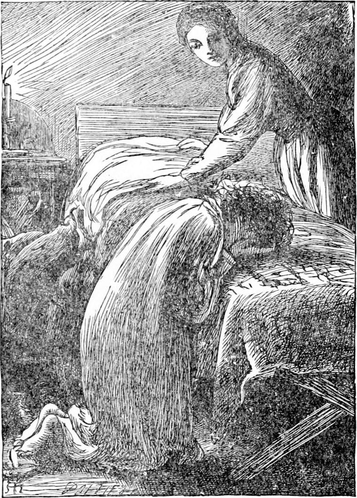
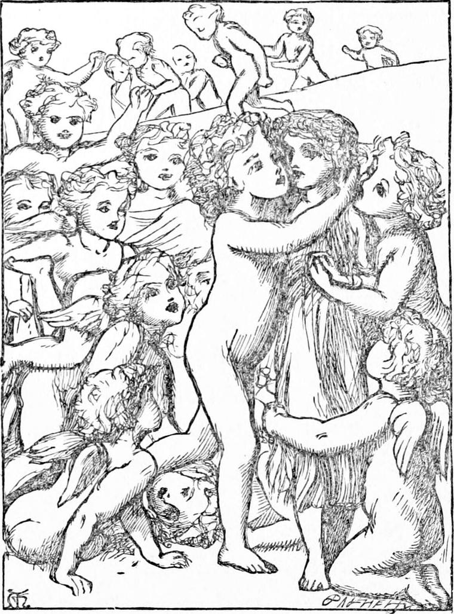

“THERE, baby!” said Diamond; “I'm so happy that I can only sing nonsense. Oh, father, think if you had been a poor man, and hadn't had a cab and old Diamond! What should I have done?”
“I don't know indeed what you could have done,” said his father from the bed.
“We should have all starved, my precious Diamond,” said his mother, whose pride in her boy was even greater than her joy in the shillings. Both of them together made her heart ache, for pleasure can do that as well as pain.
“Oh no! we shouldn't,” said Diamond. “I could have taken Nanny's crossing till she came back; and then the money, instead of going for Old Sal's gin, would have gone for father's beef-tea. I wonder what Nanny will do when she gets well again. Somebody else will be sure to have taken the crossing by that time. I wonder if she will fight for it, and whether I shall have to help her. I won't bother my head about that. Time enough yet! Hey diddle! hey diddle! hey diddle diddle! I wonder whether Mr. Raymond would take me to see Nanny. Hey diddle! hey diddle! hey diddle diddle! The baby and fiddle! O, mother, I'm such a silly! But I can't help it. I wish I could think of something else, but there's nothing will come into my head but hey diddle diddle! the cat and the fiddle! I wonder what the angels do—when they're extra happy, you know—when they've been driving cabs all day and taking home the money to their mothers. Do you think they ever sing nonsense, mother?”
“I daresay they've got their own sort of it,” answered his mother, “else they wouldn't be like other people.” She was thinking more of her twenty-one shillings and sixpence, and of the nice dinner she would get for her sick husband next day, than of the angels and their nonsense, when she said it. But Diamond found her answer all right.
“Yes, to be sure,” he replied. “They wouldn't be like other people if they hadn't their nonsense sometimes. But it must be very pretty nonsense, and not like that silly hey diddle diddle! the cat and the fiddle! I wish I could get it out of my head. I wonder what the angels' nonsense is like. Nonsense is a very good thing, ain't it, mother?—a little of it now and then; more of it for baby, and not so much for grown people like cabmen and their mothers? It's like the pepper and salt that goes in the soup—that's it—isn't it, mother? There's baby fast asleep! Oh, what a nonsense baby it is—to sleep so much! Shall I put him down, mother?”
Diamond chattered away. What rose in his happy little heart ran out of his mouth, and did his father and mother good. When he went to bed, which he did early, being more tired, as you may suppose, than usual, he was still thinking what the nonsense could be like which the angels sang when they were too happy to sing sense. But before coming to any conclusion he fell fast asleep. And no wonder, for it must be acknowledged a difficult question.

That night he had a very curious dream which I think my readers would like to have told them. They would, at least, if they are as fond of nice dreams as I am, and don't have enough of them of their own.
He dreamed that he was running about in the twilight in the old garden. He thought he was waiting for North Wind, but she did not come. So he would run down to the back gate, and see if she were there. He ran and ran. It was a good long garden out of his dream, but in his dream it had grown so long and spread out so wide that the gate he wanted was nowhere. He ran and ran, but instead of coming to the gate found himself in a beautiful country, not like any country he had ever been in before. There were no trees of any size; nothing bigger in fact than hawthorns, which were full of may-blossom. The place in which they grew was wild and dry, mostly covered with grass, but having patches of heath. It extended on every side as far as he could see. But although it was so wild, yet wherever in an ordinary heath you might have expected furze bushes, or holly, or broom, there grew roses—wild and rare—all kinds. On every side, far and near, roses were glowing. There too was the gum-cistus, whose flowers fall every night and come again the next morning, lilacs and syringas and laburnums, and many shrubs besides, of which he did not know the names; but the roses were everywhere. He wandered on and on, wondering when it would come to an end. It was of no use going back, for there was no house to be seen anywhere. But he was not frightened, for you know Diamond was used to things that were rather out of the way. He threw himself down under a rose-bush, and fell asleep.
He woke, not out of his dream, but into it, thinking he heard a child's voice, calling “Diamond, Diamond!” He jumped up, but all was still about him. The rose-bushes were pouring out their odours in clouds. He could see the scent like mists of the same colour as the rose, issuing like a slow fountain and spreading in the air till it joined the thin rosy vapour which hung over all the wilderness. But again came the voice calling him, and it seemed to come from over his head. He looked up, but saw only the deep blue sky full of stars—more brilliant, however, than he had seen them before; and both sky and stars looked nearer to the earth.
While he gazed up, again he heard the cry. At the same moment he saw one of the biggest stars over his head give a kind of twinkle and jump, as if it went out and came in again. He threw himself on his back, and fixed his eyes upon it. Nor had he gazed long before it went out, leaving something like a scar in the blue. But as he went on gazing he saw a face where the star had been—a merry face, with bright eyes. The eyes appeared not only to see Diamond, but to know that Diamond had caught sight of them, for the face withdrew the same moment. Again came the voice, calling “Diamond, Diamond;” and in jumped the star to its place.
Diamond called as loud as he could, right up into the sky:
“Here's Diamond, down below you. What do you want him to do?”
The next instant many of the stars round about that one went out, and many voices shouted from the sky,—
“Come up; come up. We're so jolly! Diamond! Diamond!”
This was followed by a peal of the merriest, kindliest laughter, and all the stars jumped into their places again.
“How am I to come up?” shouted Diamond.
“Go round the rose-bush. It's got its foot in it,” said the first voice.
Diamond got up at once, and walked to the other side of the rose-bush.
There he found what seemed the very opposite of what he wanted—a stair down into the earth. It was of turf and moss. It did not seem to promise well for getting into the sky, but Diamond had learned to look through the look of things. The voice must have meant that he was to go down this stair; and down this stair Diamond went, without waiting to think more about it.
It was such a nice stair, so cool and soft—all the sides as well as the steps grown with moss and grass and ferns! Down and down Diamond went—a long way, until at last he heard the gurgling and splashing of a little stream; nor had he gone much farther before he met it—yes, met it coming up the stairs to meet him, running up just as naturally as if it had been doing the other thing. Neither was Diamond in the least surprised to see it pitching itself from one step to another as it climbed towards him: he never thought it was odd—and no more it was, there. It would have been odd here. It made a merry tune as it came, and its voice was like the laughter he had heard from the sky. This appeared promising; and he went on, down and down the stair, and up and up the stream, till at last he came where it hurried out from under a stone, and the stair stopped altogether. And as the stream bubbled up, the stone shook and swayed with its force; and Diamond thought he would try to lift it. Lightly it rose to his hand, forced up by the stream from below; and, by what would have seemed an unaccountable perversion of things had he been awake, threatened to come tumbling upon his head. But he avoided it, and when it fell, got upon it. He now saw that the opening through which the water came pouring in was over his head, and with the help of the stone he scrambled out by it, and found himself on the side of a grassy hill which rounded away from him in every direction, and down which came the brook which vanished in the hole. But scarcely had he noticed so much as this before a merry shouting and laughter burst upon him, and a number of naked little boys came running, every one eager to get to him first. At the shoulders of each fluttered two little wings, which were of no use for flying, as they were mere buds; only being made for it they could not help fluttering as if they were flying. Just as the foremost of the troop reached him, one or two of them fell, and the rest with shouts of laughter came tumbling over them till they heaped up a mound of struggling merriment. One after another they extricated themselves, and each as he got free threw his arms round Diamond and kissed him. Diamond's heart was ready to melt within him from clear delight. When they had all embraced him,—

“Now let us have some fun,” cried one, and with a shout they all scampered hither and thither, and played the wildest gambols on the grassy slopes. They kept constantly coming back to Diamond, however, as the centre of their enjoyment, rejoicing over him as if they had found a lost playmate.
There was a wind on the hillside which blew like the very embodiment of living gladness. It blew into Diamond's heart, and made him so happy that he was forced to sit down and cry.
“Now let's go and dig for stars,” said one who seemed to be the captain of the troop.
They all scurried away, but soon returned, one after another, each with a pickaxe on his shoulder and a spade in his hand. As soon as they were gathered, the captain led them in a straight line to another part of the hill. Diamond rose and followed.
“Here is where we begin our lesson for to-night,” he said. “Scatter and dig.”
There was no more fun. Each went by himself, walking slowly with bent shoulders and his eyes fixed on the ground. Every now and then one would stop, kneel down, and look intently, feeling with his hands and parting the grass. One would get up and walk on again, another spring to his feet, catch eagerly at his pickaxe and strike it into the ground once and again, then throw it aside, snatch up his spade, and commence digging at the loosened earth. Now one would sorrowfully shovel the earth into the hole again, trample it down with his little bare white feet, and walk on. But another would give a joyful shout, and after much tugging and loosening would draw from the hole a lump as big as his head, or no bigger than his fist; when the under side of it would pour such a blaze of golden or bluish light into Diamond's eyes that he was quite dazzled. Gold and blue were the commoner colours: the jubilation was greater over red or green or purple. And every time a star was dug up all the little angels dropped their tools and crowded about it, shouting and dancing and fluttering their wing-buds.
When they had examined it well, they would kneel down one after the other and peep through the hole; but they always stood back to give Diamond the first look. All that diamond could report, however, was, that through the star-holes he saw a great many things and places and people he knew quite well, only somehow they were different—there was something marvellous about them—he could not tell what. Every time he rose from looking through a star-hole, he felt as if his heart would break for, joy; and he said that if he had not cried, he did not know what would have become of him.
As soon as all had looked, the star was carefully fitted in again, a little mould was strewn over it, and the rest of the heap left as a sign that the star had been discovered.
At length one dug up a small star of a most lovely colour—a colour Diamond had never seen before. The moment the angel saw what it was, instead of showing it about, he handed it to one of his neighbours, and seated himself on the edge of the hole, saying:
“This will do for me. Good-bye. I'm off.”
They crowded about him, hugging and kissing him; then stood back with a solemn stillness, their wings lying close to their shoulders. The little fellow looked round on them once with a smile, and then shot himself headlong through the star-hole. Diamond, as privileged, threw himself on the ground to peep after him, but he saw nothing. “It's no use,” said the captain. “I never saw anything more of one that went that way.”
“His wings can't be much use,” said Diamond, concerned and fearful, yet comforted by the calm looks of the rest.
“That's true,” said the captain. “He's lost them by this time. They all do that go that way. You haven't got any, you see.”
“No,” said Diamond. “I never did have any.”
“Oh! didn't you?” said the captain.
“Some people say,” he added, after a pause, “that they come again. I don't know. I've never found the colour I care about myself. I suppose I shall some day.”
Then they looked again at the star, put it carefully into its hole, danced around it and over it—but solemnly, and called it by the name of the finder.
“Will you know it again?” asked Diamond.
“Oh, yes. We never forget a star that's been made a door of.”
Then they went on with their searching and digging.
Diamond having neither pickaxe nor spade, had the more time to think.
“I don't see any little girls,” he said at last.
The captain stopped his shovelling, leaned on his spade, rubbed his forehead thoughtfully with his left hand—the little angels were all left-handed—repeated the words “little girls,” and then, as if a thought had struck him, resumed his work, saying—
“I think I know what you mean. I've never seen any of them, of course; but I suppose that's the sort you mean. I'm told—but mind I don't say it is so, for I don't know—that when we fall asleep, a troop of angels very like ourselves, only quite different, goes round to all the stars we have discovered, and discovers them after us. I suppose with our shovelling and handling we spoil them a bit; and I daresay the clouds that come up from below make them smoky and dull sometimes. They say—mind, I say they say—these other angels take them out one by one, and pass each round as we do, and breathe over it, and rub it with their white hands, which are softer than ours, because they don't do any pick-and-spade work, and smile at it, and put it in again: and that is what keeps them from growing dark.”
“How jolly!” thought Diamond. “I should like to see them at their work too.—When do you go to sleep?” he asked the captain.
“When we grow sleepy,” answered the captain. “They do say—but mind I say they say—that it is when those others—what do you call them? I don't know if that is their name; I am only guessing that may be the sort you mean—when they are on their rounds and come near any troop of us we fall asleep. They live on the west side of the hill. None of us have ever been to the top of it yet.”
Even as he spoke, he dropped his spade. He tumbled down beside it, and lay fast asleep. One after the other each of the troop dropped his pickaxe or shovel from his listless hands, and lay fast asleep by his work.
“Ah!” thought Diamond to himself, with delight, “now the girl-angels are coming, and I, not being an angel, shall not fall asleep like the rest, and I shall see the girl-angels.”
But the same moment he felt himself growing sleepy. He struggled hard with the invading power. He put up his fingers to his eyelids and pulled them open. But it was of no use. He thought he saw a glimmer of pale rosy light far up the green hill, and ceased to know.
When he awoke, all the angels were starting up wide awake too. He expected to see them lift their tools, but no, the time for play had come. They looked happier than ever, and each began to sing where he stood. He had not heard them sing before.
“Now,” he thought, “I shall know what kind of nonsense the angels sing when they are merry. They don't drive cabs, I see, but they dig for stars, and they work hard enough to be merry after it.”
And he did hear some of the angels' nonsense; for if it was all sense to them, it had only just as much sense to Diamond as made good nonsense of it. He tried hard to set it down in his mind, listening as closely as he could, now to one, now to another, and now to all together. But while they were yet singing he began, to his dismay, to find that he was coming awake—faster and faster. And as he came awake, he found that, for all the goodness of his memory, verse after verse of the angels' nonsense vanished from it. He always thought he could keep the last, but as the next began he lost the one before it, and at length awoke, struggling to keep hold of the last verse of all. He felt as if the effort to keep from forgetting that one verse of the vanishing song nearly killed him. And yet by the time he was wide awake he could not be sure of that even. It was something like this:
Wash the stars' faces,
Till glitter, glitter, glit, goes their brightness
Down to poor places.
This, however, was so near sense that he thought it could not be really what they did sing.